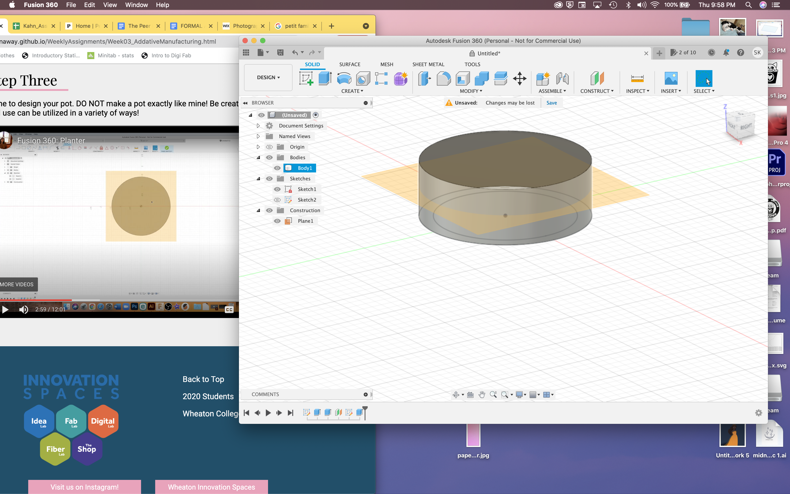
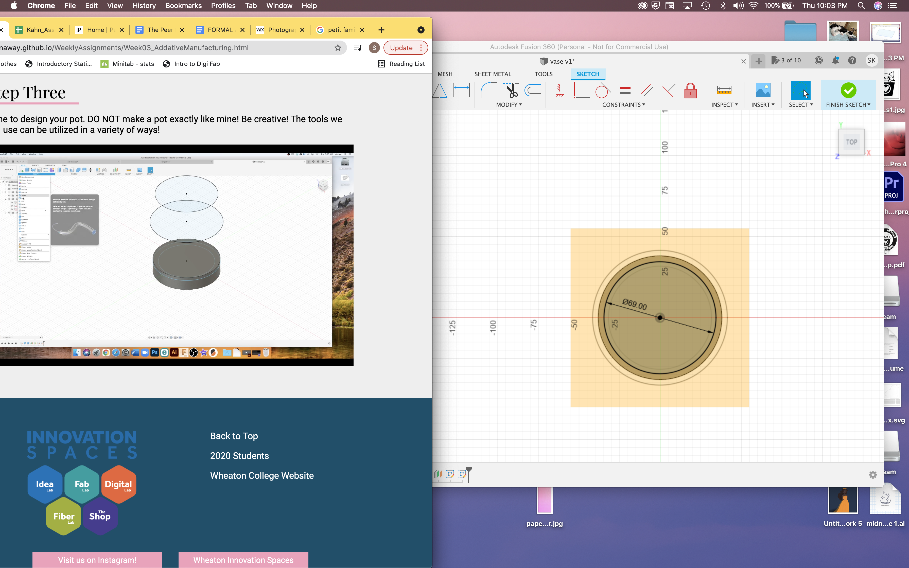

FDM Printing
This project was to make a vase to fit into my desk organizer from last week! My scheduling was a little weird this week, so I went through and followed Madison's video on fusion to make my vase before my training.
 Here, I used the offest plane to build the different parts of my vase. The middle plane was where I made the elipse the widest so that the vase had a curve to it.
 https://drive.google.com/file/d/1wl3V95IyBo7PpukvED9_s7L9DRPL0Kt7/view
https://drive.google.com/file/d/1wl3V95IyBo7PpukvED9_s7L9DRPL0Kt7/view
I've really enjoyed learning how to use fushion! It's super interesting and I've found it pretty easy to comprehend. I dedcided to add a circular design to my vase, since I wanted it have some funky polka dots. The slightly larger elipses in the pattern didn't have their edge go all the way to the body of the vase, and if I were to go back and do that I again I might change that! Or just add even more smaller polka dots.
Now it was time for my training! I went in and met with Whitney Friday morning! We exported my design as an STL into Prusa Slicer, and went over the different settings and what they all do

We added supports along the sides so the polka dots wouldn't stall/break the print!
Now, we saved the design onto the SD card, and went over to the printers. My print was going to take just under 9 hours, so I booked the Asaji printer for the afternoon through the evening!


Whitney showed me how to load and unload the filiment, as well as remove the plate from the printer and wiggle it to get the printed design off. Then we tried to start printing. The extruder was too low, and the print wasn't coming out right! We fiddled with it a little, but then my training ended and I had to head to my math class! I came back in at around 12:45 after my class and a quick lunch, to get back to work on it! Whitney had cleared the excess glue from the last print off the plate with isoprophyl alcohol, then showed me how to do the same, as well as reset the extruder so it was at the right level. Now, my print was working!


This is where I left my print on Friday afternoon, and just had to keep my fingeres crossed that it would continue to print correctly! I had work for most of Saturday, so Sunday morning I came back to the lab to check the print!


I'm so happy with how my funky little vase turned out! It fits into my organizer perfectly
Thanks for reading!